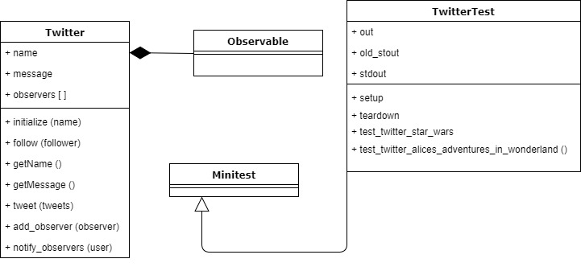

Observer Method Pattern¶ ↑
This documentation was developed for the Software Design and Architecture class, at the Tecnológico de Monterrey by Mario Lagunes Nava (A01374648) and Brandon Alain Cruz Ruiz (A01375640).
Overview¶ ↑
This pattern allows to, with an object, called the subject,mantain a list of its dependents, called observers, and notifies the automatically of any state changes, usuaylly by calling one of it methods.
Here is the UML class diagram:

To test the program, inside the src folder type the following
instruction at the command line:
ruby twitter_test.rb
or in case it did not work, type the following instruction:
ruby -I -w twitter_test.rb
References¶ ↑
-
R. Olsen. Design Patterns in Ruby. Addison-Wesley,2007.